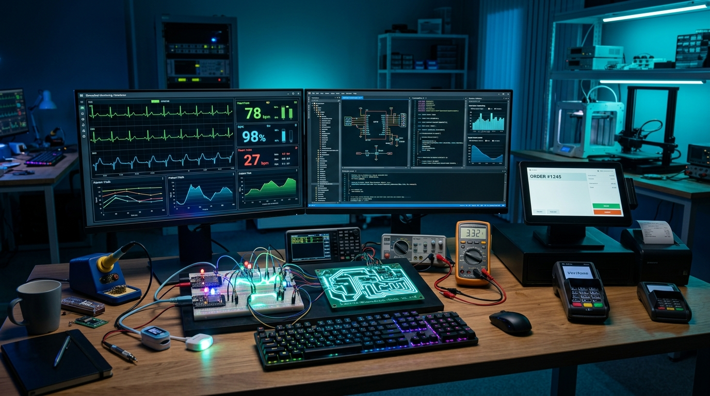

A Maurinsoft é uma empresa brasileira de tecnologia focada em soluções práticas, acessíveis e robustas de software, automação comercial, eletrônica embarcada e sistemas biomédicos.
Fundador e líder de desenvolvimento da Maurinsoft, Marcelo é tecnólogo em Processamento de Dados pela FATEC e técnico em Mecânica pela ETEC.
Acumula mais de 20 anos de experiência prática na concepção e sustentação de sistemas de informação e automação, com passagem por grandes empresas como TOTVS, Zanthus e Comlink. Atua também na área pública como analista de sistemas na Secretaria da Saúde, o que fundamentou sua sólida especialização em Sistemas Biomédicos e Hospitalares.
Seu compromisso com a comunidade de software livre e desenvolvimento multiplataforma se reflete em projetos conceituados como o MNote2 (editor em Lazarus com traduções globais), Projeto Fila e artigos técnicos sobre automação com microcontroladores ESP32 e Raspberry Pi.
Democratizar a alta tecnologia, fornecendo equipamentos sob medida e softwares estáveis que resolvam dores reais de pequenos a grandes estabelecimentos comerciais, hospitais, clínicas e repartições públicas.
Ser reconhecida como um polo de excelência em prototipagem eletrônica e engenharia de software no Brasil, provando que a união de hardware e software nacional pode competir de igual para igual com soluções importadas.
Transparência técnica integral, respeito ao investimento do cliente, ausência de mensalidades predatórias e foco obsessivo em confiabilidade operacional (sistemas que não travam).

Localizada no polo tecnológico e industrial da região metropolitana de Ribeirão Preto, a Maurinsoft conta com laboratório próprio equipado para montagem de protótipos, bancada de testes de firmware e servidores de desenvolvimento.
Maurinsoft - Marcelo Maurin Martins
Jardinópolis - SP • CEP: 14680-000
E-mail: marcelomaurinmartins@gmail.com
WhatsApp: (16) 98143-4112